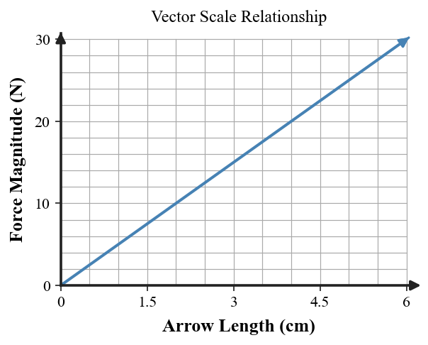

Net Force and Vectors
Core idea: Force is a vector: both magnitude and direction matter, and the net force is the resultant of all force vectors on the object.
You will combine same-direction and opposite-direction forces, use vector scales, and find simple perpendicular resultants.
Learning Target
Students will represent forces as vectors and determine the direction and relative size of the net force in one-dimensional and simple two-dimensional situations.
I can statements
- I can explain why force is a vector quantity.
- I can combine forces acting in the same direction or opposite directions.
- I can identify the resultant force from a simple vector diagram and use arrow length and direction to compare force strength and direction.
Vocabulary Preview
Skim the terms first. In the blank space, jot a word, example, picture, or question you already connect to each term. Definitions come later.
| Term | Before the reading: my connection / question |
|---|---|
| vector | |
| magnitude | |
| direction | |
| resultant | |
| net force |
What's To Come
This is a long-range preview for this section. Do not solve it yet. Circle anything familiar, underline symbols, labels, conditions, data, or features that seem important, and write short notes about what you think may matter later.
Three students draw force arrows for the same box. One uses a 2 cm arrow for a 10 N push, another uses a 4 cm arrow for a 20 N push, and a third uses a 4 cm arrow for a 10 N push.
Without choosing a winner yet, list the questions you would ask about the scale and direction of the arrows so the drawings can be compared fairly.
Teaching note: Have students ask whether all drawings use the same N-per-cm scale, whether directions match, and whether the arrows refer to forces on the same object. Do not declare a winner yet.
Content: Read, Represent, Annotate, Apply
Directions
Read in short chunks. Annotate the prose and representations together. Mark evidence, conditions, important quantities, labels, patterns, and questions.
Reading 1: Force Arrows Carry Magnitude and Direction
A vector is a quantity that requires both magnitude and direction for a complete description. For a force vector, magnitude tells how strong the force is and direction tells where the force points. Arrow length is meaningful only when a scale is defined.
The net force is the vector sum of all forces acting on an object. Forces pointing in the same direction add. Forces along the same line but pointing in opposite directions subtract, and the net-force direction follows the larger side.

The single vector that has the same combined effect as the original vectors is the resultant. Net force is therefore a resultant force, not an extra interaction arrow to draw in addition to the actual forces.
Stop and Discuss
- Before doing arithmetic, what direction information should you read from a force diagram?
- Why is net force a result of combining forces rather than another force interaction?
Teaching note: Expected reasoning: direction determines add vs subtract. Net force is computed from interaction forces and should not be counted as another interaction.
Example 1: Combine Forces in the Same Direction
Two students push a cart in the same direction with forces of 18 N and 27 N. Find the net force.
Teacher answer: The forces add: $18+27=45$ N in the direction of the pushes.
You Try It 1: Add Same-Direction Pushes
Two pushes of 22 N and 31 N act in the same direction. Find the resultant.
Teacher answer: $22+31=53$ N in the common direction.
Example 2: Combine Opposing Forces
A 42 N pull acts right and a 17 N pull acts left. Find the net force and direction.
Teacher answer: $42-17=25$ N to the right.
You Try It 2: Find Direction from Opposing Forces
A 36 N force acts left while a 14 N force acts right. Determine $F_{net}$.
Teacher answer: $36-14=22$ N to the left.
Reading 2: Vector Scale Makes Arrow Length Meaningful
A scaled vector diagram turns arrow length into quantitative evidence. If the scale is 1 cm for every 5 N, doubling the arrow length doubles the represented force. The same scale must be used across the diagram if the arrows are going to be compared fairly.

A useful check is to write the scale as a ratio before converting: $5\,\text{N}/1\,\text{cm}$. Then multiply by a measured arrow length or divide a force by the scale to determine the required length.
Stop and Discuss
- How can you tell from a graph or ratio that a vector scale is proportional?
- What would go wrong if two students used different arrow scales and compared lengths without noticing?
Teaching note: Expected reasoning: the force-vs-length relation is proportional. Different scales make raw arrow lengths incomparable unless converted.
Example 3: Use a Vector Scale
A vector diagram uses 1 cm of arrow length for every 5 N. How long should the arrow be for a 30 N force?
Teacher answer: $30/5=6$ cm.
You Try It 3: Convert Arrow Length to Force
On the same scale, an arrow is 3.5 cm long. What force magnitude does it represent?
Teacher answer: $3.5\times5=17.5$ N.
Reading 3: Perpendicular Forces Combine Geometrically
When force vectors are not along the same line, simple addition or subtraction of magnitudes is not enough. The source text uses the parallelogram rule: place the two vectors as adjacent sides and the diagonal gives the resultant.

For perpendicular forces, the two force magnitudes act like the legs of a right triangle. The resultant magnitude follows the Pythagorean relationship. The diagonal also shows the resultant direction: it points between the two component directions.

Stop and Discuss
- Why can you not simply add 6 N east and 8 N north to get a 14 N resultant?
- What does the diagonal of the force triangle tell you besides the magnitude?
Teaching note: Expected reasoning: east and north are perpendicular directions, so their magnitudes form legs of a right triangle; the diagonal gives both resultant size and combined direction.
For perpendicular components, $$F_{net}=\sqrt{F_x^2+F_y^2}.$$
Use this only when the component forces are at right angles. The direction of the resultant lies between the component directions.
Example 4: Find a Perpendicular Resultant
Perpendicular forces of 6 N east and 8 N north act on an object. Find the magnitude of the resultant and describe its direction.
Teacher answer: $F_{net}=\sqrt{6^2+8^2}=10$ N, directed northeast (more north than east).
You Try It 4: Use a Right-Triangle Resultant
Perpendicular forces of 5 N east and 12 N north act together. Find the resultant magnitude.
Teacher answer: $F_{net}=\sqrt{5^2+12^2}=13$ N.
Vocabulary Definitions
| Term | Meaning in this section |
|---|---|
| vector | A quantity described by both magnitude and direction. |
| magnitude | The size or numerical strength of a vector quantity. |
| direction | The orientation in which a vector points. |
| resultant | A single vector equal to the vector sum of two or more vectors. |
| net force | The resultant of all force vectors acting on the chosen object. |
Summary
- Read vector direction before choosing an arithmetic operation.
- Same-direction forces add; opposite collinear forces subtract and point toward the larger force.
- Arrow length represents magnitude only when a consistent scale is defined.
- Net force is the resultant of the real interaction forces, not an additional force.
- Perpendicular force resultants form a right-triangle relationship.
Teaching note: Check that students consistently attach both magnitude and direction to every force result.
Common Mistakes
| Mistake | Why it is tempting | Check instead |
|---|---|---|
| Adding all force magnitudes as positive numbers. | The arrows may look like a list of values. | Read direction first; opposite directions must be treated oppositely. |
| Ignoring the arrow scale. | The arrow shape may look merely decorative. | Write the N-per-cm scale before comparing lengths. |
| Drawing net force as an extra interaction force. | The resultant is often shown as an arrow. | Separate actual forces from the calculated resultant. |
| Using the Pythagorean theorem for non-perpendicular forces. | It is a familiar vector formula. | Confirm the components are at right angles before using it. |